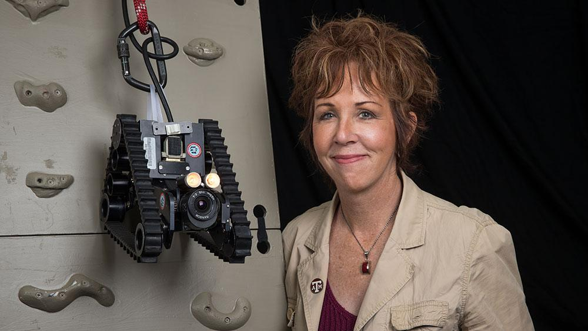
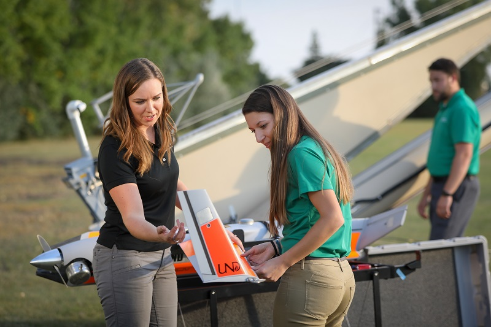

Launch Your Future as a UAV Pilot / Drone Operator
Fly drones for filming, mapping, and search-and-rescue missions!
Pathway Snapshot
High School Courses | College Majors | Career Roles |
Physics | Aerospace Engineering | UAV Pilot |
Computer Science | Robotics Engineering | Drone Operator |
Engineering | Geospatial Science | Remote Sensing Technician |
Math (Algebra, Trig) | Aviation / Aviation Technology | Aerial Survey Specialist |
Geography / GIS | Computer Science | Public Safety Drone Pilot |
Women Who Lead the Way
Dr. Robin Murphy
Raytheon Professor of Computer Science & Engineering, Texas A&M University, Founder of CRASAR (Center for Robot-Assisted Search and Rescue)

Photo Credit: Texas A&M Engineering
“Robots and drones can go where people can’t—and that can save lives.”
Dr. Robin Murphy is an American roboticist and computer scientist recognized as the founder of the field of disaster robotics. She is the Raytheon Professor of Computer Science and Engineering at Texas A&M University, where she directs the Center for Robot‑Assisted Search and Rescue (CRASAR). Her research has transformed how robots are used in search, rescue, and emergency management worldwide.
Day in the Life
Daily Tasks | Tools & Technologies Used |
Plan and execute drone flights | UAVs (DJI, Skydio, Autel) |
Capture aerial photos & video | Flight control apps |
Collect environmental or mapping data | GPS & GIS software |
Maintain and troubleshoot drones | Sensors & cameras |
Analyze and report findings | Data visualization tools |
Mini-Activity: Try This!
Drone Simulator
Use a free drone flight simulator (like DJI Flight Simulator or Zephyr Drone Simulator) to practice takeoff, navigation, and landing. Then sketch a simple mission plan—what data would you collect and why?
Careers & Resources
Degree Program Finder:
Scholarships:
Summer Camps / Bootcamps:
Explore More:
- O*NET – https://www.onetonline.org
- Roadtrip Nation – https://roadtripnation.com
You Belong Here
If you love technology, hands-on learning, exploration, or solving real-world problems, UAV piloting could be your future. You don’t have to choose between flying, engineering, and impact—you can do all three.
Your path. Your future. The sky isn’t the limit—it’s just the beginning.
